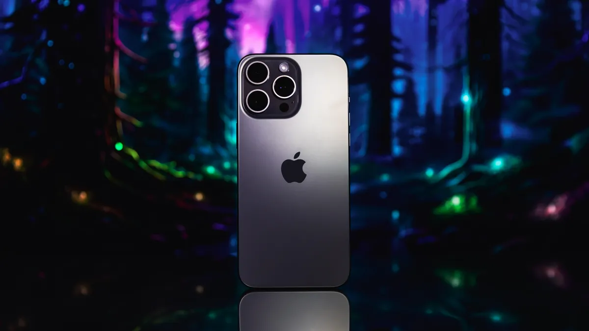

The iPhone 15 Pro Max is Apple's most expensive iPhone, priced at $1,399. It has a 6.7in Super Retina XDR (OLED) screen, an Apple A17 Pro processor, and 8GB of RAM. It also has a 48MP main camera, 12MP UW and 12MP 5x zoom camera, and 12MP front-facing camera. The iPhone 15 Pro Max is a smartphone designed, developed, and marketed by Apple. It's the 17th generation of the iPhone, succeeding the iPhone 14 Pro Max.
Here are some specifications for the iPhone 15 Pro Max:
Screen: 6.1in Super Retina XDR (OLED) (460ppi)
Storage: 256, 512GB or 1TB
Operating system: iOS 17
Water resistance: Can resist water up to 6 meters for 30 minutes
Connectivity: 5G, wifi 6E, NFC, Bluetooth 5.3, Thread, USB-C, Satellite, UWB and GNSS
Storage: 128, 256, 512GB or 1TB
Operating system: iOS 17
Camera: 48MP main, 12MP UW and 12MP 3x zoom, 12MP front-facing camera
Connectivity: 5G, wifi 6E, NFC, Bluetooth 5.3, Thread, USB-C, Satellite, UWB and GNSS
Design: Aerospace-grade titanium design
Data transfer: USB 3, 6 for faster data transfer speeds
AI: Qualcomm's silicon offers more performance to AI software

The iPhone 15 Pro is the first iPhone to feature an aerospace-grade titanium design. It's also the first iPhone to support USB 3, 6 for faster data transfer speeds.
The iPhone 15 Pro Max is available in 6.1-inch and 6.7-inch display sizes. It features a strong and lightweight titanium design, which is a first for iPhone. This premium alloy has one of the highest strength-to-weight ratios of any metal, making this Apple's lightest Pro lineup ever.